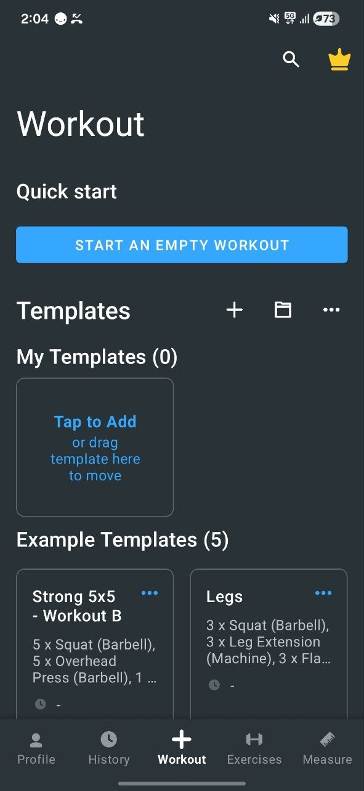
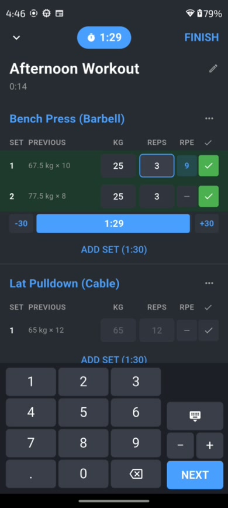
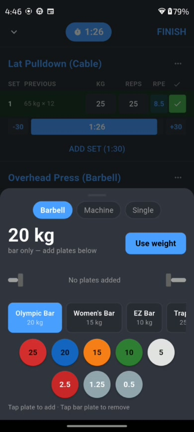
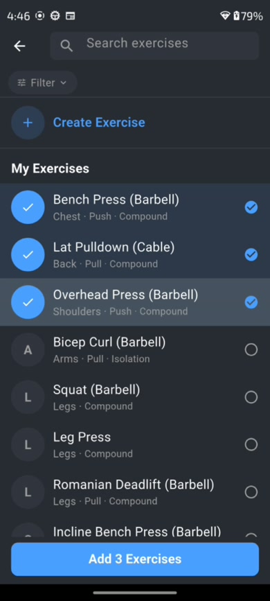
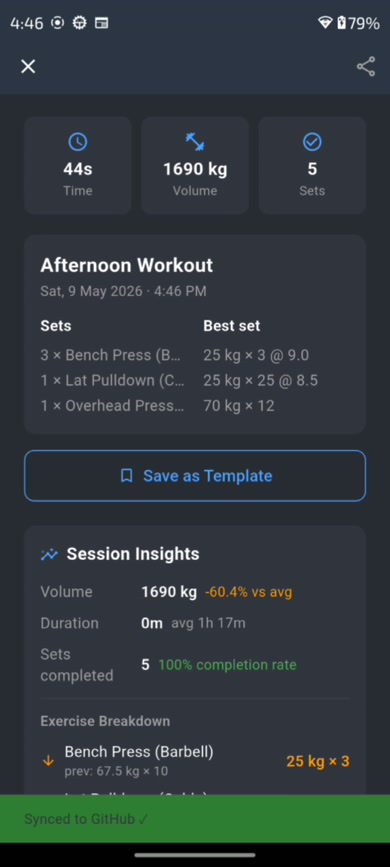
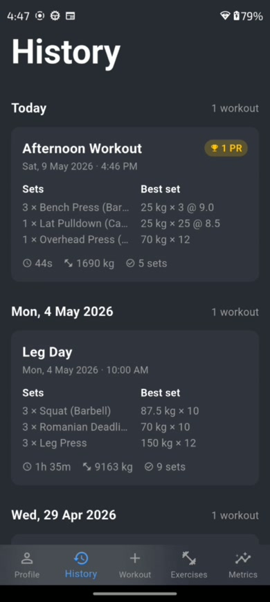
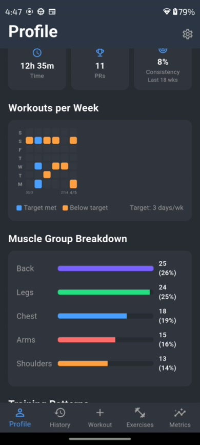
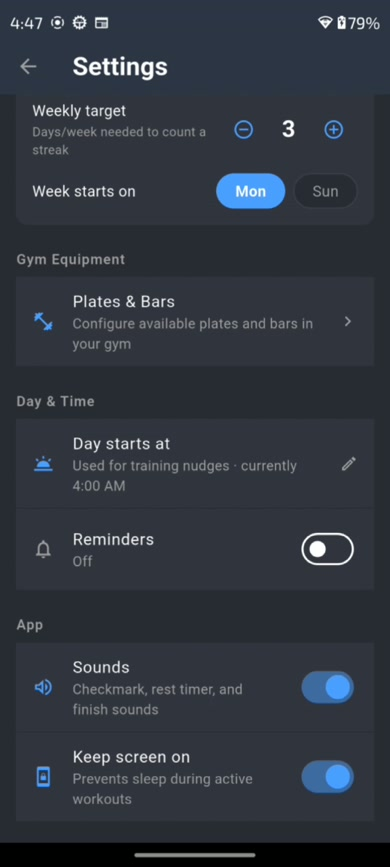

A workout tracker for Android. Log every set, track PRs, and sync your history as markdown to your own GitHub repo.
Weight, reps, RPE, cardio distance and time. Rest timer with ±30s adjustments. Per-set completion tracking.
Volume, estimated 1RM, and set history per exercise. Personal records auto-detected on every workout finish.
PRs flagged in real time as you complete sets. Full PR history across all exercises on the Profile tab.
300+ exercises seeded from Strong's database. Create custom exercises with muscle group, type, and tags.
Export your full workout history as a CSV. Compatible with spreadsheets and other fitness apps.
Zero lag while typing weights or reps. Debounced saves, isolated timers, and RepaintBoundary per exercise card.








Connect with a fine-grained personal access token scoped only to your workout repo. Pick an existing repo or create one in the app. Every workout syncs as a readable markdown file.
| Set | Weight | Reps | RPE |
|---|---|---|---|
| 1 | 80 kg | 8 | 7 |
| 2 | 85 kg | 6 | 8 |
| 3 | 90 kg | 4 | 9 |
RPE is optional — it tracks how hard a set felt on a scale of 6–10.
Go to Profile → Settings → Support → Report a bug. This opens a pre-addressed email — describe what happened and tap Send.